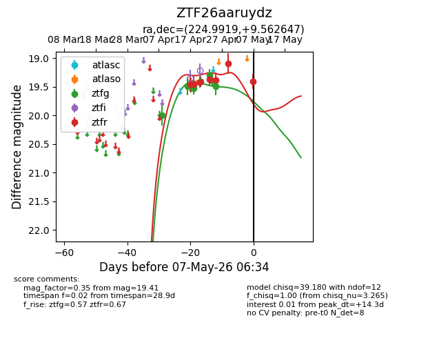
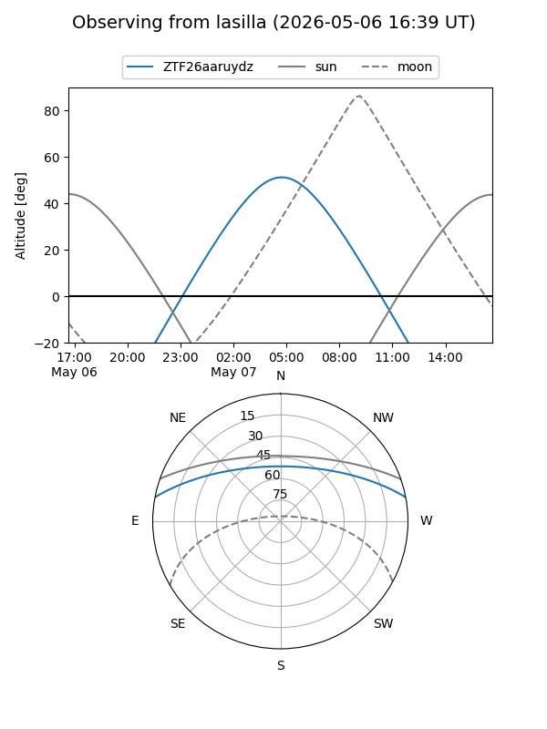
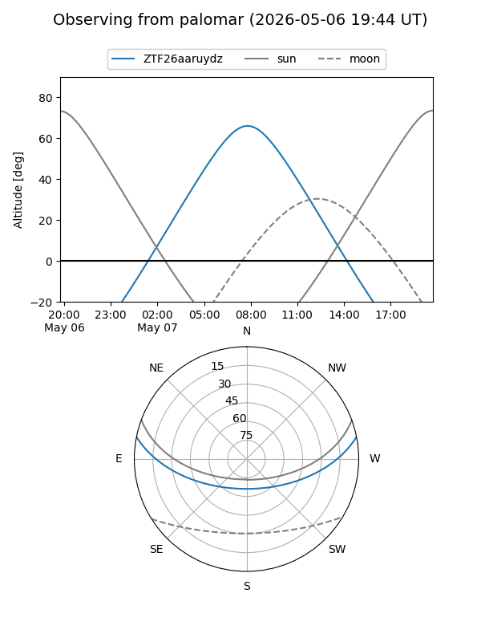
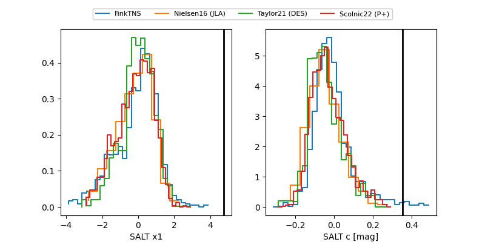

ZTF26aaruydz
Target ZTF26aaruydz at 2026-05-07 06:36
Aliases and brokers:
FINK: link
Lasair: link
ALeRCE: link
alt names
ZTF26aaruydz (ztf,fink_ztf)
Coordinates:
equatorial (ra, dec) = 224.9919,+9.56265
equatorial (HMS+DMS) = 14:59:58.06,+09:33:45.53
galactic (l, b) = (8.9863,+54.97872)
Flags:
Photometry:
last ztfg=19.49, ztfr=19.41
8 ztfg, 7 ztfr detections
Lightcurve

Visibility


Additional plots
